1과목: 수산물품질관리 관련법령
1. 농수산물 품질관리법상 이력추적관리의 정의이다. ( )에 들어갈 내용을 순서대로 옳게 나열한 것은?
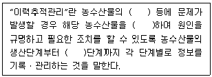
2. 농수산물 품질관리법상 농수산물품질관리심의회의 설치에 관한 내용으로 옳은 것은?
3. 농수산물 품질관리법상 수산물의 품질인증에 관한 설명으로 옳지 않은 것은?
4. 농수산물 품질관리법상 지리적표시에 관한 설명으로 옳지 않은 것은?
5. 농수산물 품질관리법상 안전성조사 결과 생산단계 안전기준을 위반한 자에 대하여 시ㆍ도지사가 조치하게 할 수 없는 것은?
6. 농수산물 품질관리법령상 중지ㆍ개선ㆍ보수명령등 및 등록취소의 기준에 관한 설명으로 옳지 않은 것은?
7. 농수산물 품질관리법령상 2년 6개월 이상의 기간 동안 매월 1회 이상 위생에 관한 조사를 하여 그 결과가 지정해역위생관리기준에 부합하는 경우 해양수산부장관이 지정하는 해역은?
8. 농수산물 품질관리법령상 수산물 및 수산가공품에 대한 검사기준의 수립권자는?
9. 농수산물 품질관리법령상 수산물검사기관의 지정 취소사유에 해당하는 것은? (단, 위반횟수는 1회이며 경감사유는 고려하지 않음)
10. 농수산물 품질관리법령상 수산물품질관리사의 직무로 옳은 것을 모두 고른 것은?
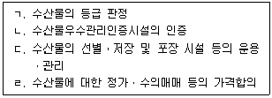
11. 농수산물 유통 및 가격안정에 관한 법령상 농수산물도매시장의 수산부류 거래품목을 모두 고른 것은?
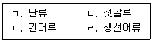
12. 농수산물 유통 및 가격안정에 관한 법령상 주요 농수산물의 생산지역이나 생산수면(이하 “주산지”라 한다)의 지정 및 해제 등에 관한 설명으로 옳은 것은?
13. 농수산물 유통 및 가격안정에 관한 법령상 경매 또는 입찰의 방법에 관한 설명으로 옳지 않은 것은?
14. 농수산물 유통 및 가격안정에 관한 법률상 공익법인이 수산물공판장을 개설하려는 경우 승인권자는?
15. 농수산물 유통 및 가격안정에 관한 법령상 농수산물 전자거래 분쟁조정위원회의 설치에 관한 설명으로 옳지 않은 것은?
16. 농수산물의 원산지 표시 등에 관한 법률의 목적에 관한 내용이다. ( )에 들어갈 내용을 순서대로 옳게 나열한 것은?
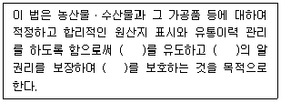
17. 농수산물의 원산지 표시 등에 관한 법률상 원산지의 정의에 관한 내용이다. ( )에 들어갈 내용을 순서대로 옳게 나열한 것은?
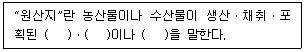
18. 농수산물의 원산지 표시 등에 관한 법령상 식품접객업(일반음식점)에서 수산물을 조리하여 판매하는 경우 원산지의 표시대상 및 표시방법이 옳은 것을 모두 고른 것은?
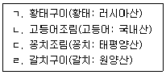
19. 농수산물의 원산지 표시 등에 관한 법령상 원산지 표시 위반에 따른 처분 등에 관한 내용으로 옳지 않은 것은?
20. 친환경농어업 육성 및 유기식품 등의 관리ㆍ지원에 관한 법령상 양식장에 양식생물(수산동물)이 없는 경우, 양식 장비나 시설의 청소를 위하여 사용 가능한 물질 중 '차박'을 사용할 수 있는 양식장은?
21. 친환경농어업 육성 및 유기식품 등의 관리ㆍ지원에 관한 법률상 과징금에 관한 내용으로 옳지 않은 것은?
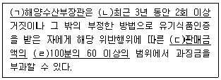
22. 친환경농어업 육성 및 유기식품 등의 관리ㆍ지원에 관한 법률상 명시된 유기농어업자재 공시의 유효기간은?
23. 수산물 유통의 관리 및 지원에 관한 법률상 산지중도매인에 관한 정의이다. ( )에 들어갈 내용을 순서대로 옳게 나열한 것은?
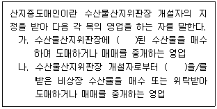
24. 수산물 유통의 관리 및 지원에 관한 법률상 수산물의 생산자와 거래관계자의 편익과 소비자 보호를 위하여 위판장개설자가 이행하여야 할 의무사항으로 옳지 않은 것은?
25. 수산물 유통의 관리 및 지원에 관한 법률상 수산물 규격화의 촉진을 위하여 해양수산부장관이 수산물유통사업자에게 요청하거나 권고할 사항이 아닌 것은?
2과목: 수산물유통론
26. 수산물 유통의 특성에 관한 설명으로 옳지 않은 것은?
27. 수산물 유통 활동에 관한 설명으로 옳지 않은 것은?
28. 소비자가 수산물 유통에서 기대하는 효과가 아닌 것은?
29. 다음 ( )에 들어갈 내용으로 옳은 것은?
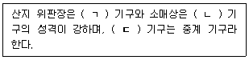
30. 소비지 도매시장의 기능이 아닌 것은?
31. 수산물 도매시장의 구성원에 해당되지 않는 것은?
32. 수산물 유통 경로로 옳지 않은 것은?
33. 산지 시장에서 수산물을 직접 구매한 후 도매상에 판매 및 도매시장에 상장 기능을 하는 조직은?
34. 냉동수산물의 유통에 관한 설명으로 옳지 않은 것은?
35. 국내산 고등어의 유통에 관한 설명으로 옳지 않은 것은?
36. 수산물 가공품의 유통에 있어 장점에 해당되는 것을 모두 고른 것은?
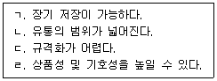
37. 수산물 유통상품 중 어단에 관한 설명으로 옳은 것은?
38. 양식산 활어의 유통 특징에 관한 설명으로 옳지 않은 것은?
39. 권현망 어업에 의해 생산되는 수산물 유통 어종은?
40. 수산물 전자상거래의 활성화를 저해하는 요인이 아닌 것은?
41. 수산물 공동판매의 유형이 아닌 것은?
42. 수산물 공동판매의 효과가 아닌 것은?
43. 수산물 산지 위판장의 주된 가격 결정 방법에 해당되는 것은?(문제 오류로 가답안 발표시 3번으로 발표되었지만 확정답안 발표시 모두 정답처리 되었습니다. 여기서는 가답안인 3번을 누르면 정답 처리 됩니다.)
44. 산지 유통과정에서 중도매인이 부담하는 비용에 해당되는 것은?
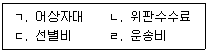
45. 우리나라의 4월 갈치 소비량이 5,000톤이었으나, 5월에는 가격이 마리당 1만원에서 1만 4천원으로 상승하여 소비량이 4,000톤으로 감소한 경우, 수요의 가격탄력성은?
46. 다음의 고등어 가격(원/kg) 자료를 이용한 소매 마진의 산출식과 금액은?
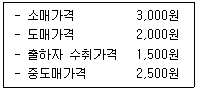
47. 수산물 마케팅믹스의 4P가 아닌 것은?
48. A씨는 지하철에서 스마트폰 앱(App)으로 수산물을 주문ㆍ결제하고 귀가 도중 근처 대형마트에서 해당 상품을 수령하였다. 이에 해당하는 거래방식은?
49. 수산물 가격 및 수급안정 정책으로 옳은 것은?
50. 수산물 유통의 정부지원 자금이 아닌 것은?
3과목: 수확후 품질관리론
51. 어패류의 선도판정 방법이 아닌 것은?
52. 젓갈 제조원리에 해당하지 않는 것은?
53. 어류의 일반적인 가공 처리형태를 순서대로 옳게 나열한 것은?
54. 수산냉동식품을 제조하기 위한 동결방법이 아닌 것은?
55. HACCP에서 구분하고 있는 주요 위해요소가 아닌 것은?
56. 수산냉동식품에서 글레이징(glazing)을 하는 목적에 해당하지 않는 것은?
57. 수산가공품 중 동건품에 해당하는 것을 모두 고른 것은?
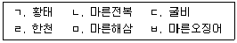
58. 어육이 90 % 동결되어 있을 때 체적 팽창률(%)은 얼마인가? (단, 어육의 수분 함량은 85 %, 물의 동결에 의한 체적 팽창률은 9 %로 하며, 수분을 제외한 나머지 성분의 동결에 의한 체적 변화는 무시한다.)
59. 연제품을 가열방법에 따라 분류할 때 증자법으로 생산되는 제품은?
60. 수산가공품 중 건제품의 가공원리에 관한 설명으로 옳은 것은?
61. 어패류의 선도유지를 위한 빙장법에 관한 설명으로 옳은 것은?
62. 통조림의 살균온도와 살균시간에 관한 내용으로 옳은 것을 모두 고른 것은?
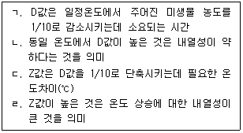
63. 수산물 표준규격상 수산물의 종류별 등급 및 포장규격에서 규정하고 있는 수산물(신선어패류)이 아닌 것은?
64. 히스타민에 의한 화학적 식중독에 관한 설명으로 옳지 않은 것은?
65. 통조림을 밀봉할 때 캔을 고정시키는 역할을 하는 시이머의 주요 부위는?
66. 시중에 판매되고 있는 통조림의 내기압을 측정한 결과 40.7 cmHg 일 때 진공도(cmHg)는 얼마인가? (단, 측정 당시 관의 외기압은 100.7 cmHg로 한다.)
67. 드립은 동결품을 해동할 때 밖으로 흘러나오는 육즙을 말한다. 드립 발생량을 줄이기 위한 방법으로 옳지 않은 것은?
68. 해조가공품에 해당하는 것은?
69. 어육의 부패에 영향을 미치는 주요 요인이 아닌 것은?
70. 수산물의 특성 중 식품 가공 원료에 관한 설명으로 옳지 않은 것은?
71. 다음에서 설명하고 있는 것은?
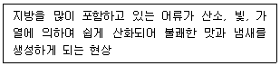
72. 어패류의 사후변화 과정을 순서대로 옳게 나열한 것은?
73. 수산물의 동결저장 중 식품변질에 관한 현상이 아닌 것은?
74. 수산 가공 기계에 관한 내용으로 옳지 않은 것은?
75. 수산물 표준규격상 수산물의 종류별 등급 및 포장규격에서 다음의 등급규격에 해당하는 것은?
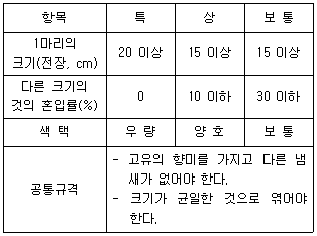
4과목: 수산일반
76. 해양의 조간대에 관한 설명으로 옳지 않은 것은?
77. 다음 중 5년간(2016 ∼ 2020년) 우리나라 어선어업에서 가장 많이 어획된 어종은?
78. 다음 중 수산업법에서 정의하는 수산업을 모두 고른 것은?
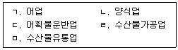
79. 수산 생물 자원 중 어선어업의 어획 대상종인 어류에 관한 설명으로 옳지 않은 것은?
80. 수산업에 관한 설명으로 옳지 않은 것은?
81. 수산자원의 단위인 계군을 구별하는 방법 중 생태학적 방법이 아닌 것은?
82. 자원량 추정방법 중 간접추정법에 해당하는 것은?
83. 수산자원관리의 방법 중 가입관리에 해당하는 것은?
84. 어류의 연령형질로 이용할 수 있는 것을 모두 고른 것은?
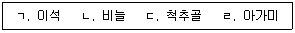
85. 그물을 구성할 때 그물감을 뻗친 길이보다 짧은 줄에 달아 그물코가 벌어지도록 한다. 이 때, 줄 길이를 그물감의 뻗친 길이로 나눈 값은?
86. 권현망은 자루, 오비기, 수비 등으로 구성되어 있다. 그물코 크기가 큰 것에서 작은 순서대로 옳게 나열한 것은?
87. 오징어 채낚기 어선에서 사용하는 물돛에 관한 설명으로 옳지 않은 것은?
88. 유영 수산 동물 양식 방법에 해당하지 않는 것은?
89. 다음 양식 사례에서 사료 계수와 사료 효율을 순서대로 옳게 나열한 것은?
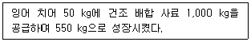
90. 폐쇄적 양식장의 수질 관리 장치가 아닌 것은?
91. 양식 어류를 활어 상태로 장시간 수송하기 위하여 활어차를 이용할 경우, 이에 관한 설명으로 옳지 않은 것은?
92. 다음에서 설명하는 김 양식 방법은?
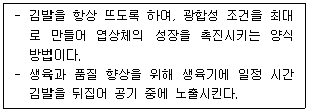
93. 다음은 먹이생물에 관한 설명이다. ( )에 들어갈 내용으로 옳은 것은?
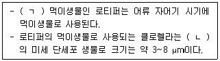
94. 양식 생물의 비감염성 질병 원인 사례를 모두 고른 것은?
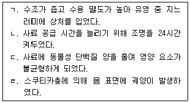
95. 넙치 양식 중 다음과 같은 증상이 나타나 치료하였다. 올바른 진단은?
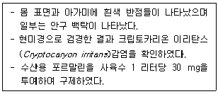
96. 다음은 뱀장어에 관한 설명이다. ( )에 들어갈 것으로 옳은 것은?
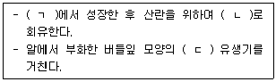
97. 우리나라 수산자원 관리방법 중 기술적 관리수단에 해당하는 것은?
98. 우리나라 총허용어획량(TAC) 제도의 참여 업종에 해당하지 않는 것은?
99. 수산자원 변동의 기본개념인 러셀(Russell)의 방정식에서 자원을 감소시키는 변동요인을 모두 고른 것은?
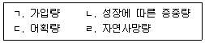
100. 우리나라 연근해에 출현하는 연어를 관리하는 국제수산기구는?